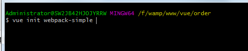
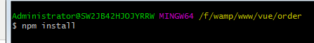
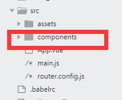
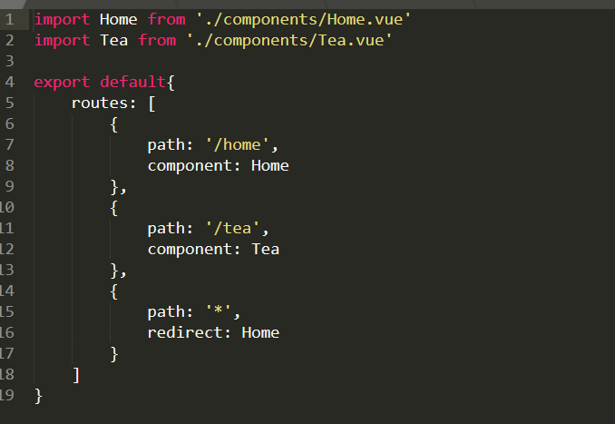
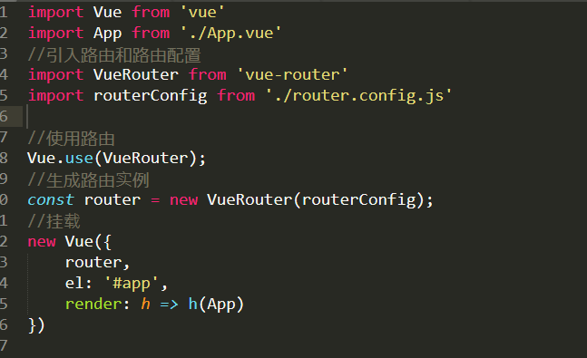
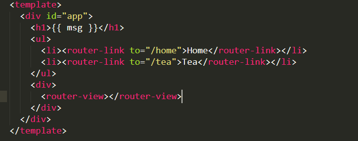
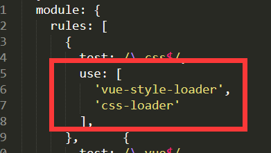

已经学过无数次，但是每次都忘记，毕竟脑容量太小了，每次都需要翻看原来项目和视频再次学习，所以以此文字形式记录下来，方便于下次使用观看
1、打开git，找到创建vue的文件夹（已经安装好git的，然后在存储项目的文件夹下鼠标右键，有个git bash here）
2、命令 vue init webpack-simple 回车（或 vue init webpack-simple 文件夹名）

3、npm(或cnpm) install (如需要安装其它插件输入命令 npm(或cnpm) install 插件名 -D)

4、运行项目命令 npm run dev（退出按ctrl+c）
5、新建组件（用于路由跳转），在src文件夹下面新建一个用于存放组件的文件夹components，在这个文件夹下面新建你所需要的组件文件(如Home.vue, News.vue);

6、安装并配置路由(卸载插件命令 npm uninstall 插件名)
1) 执行命令npm install vue-route --save(或-D)
2) 在src文件夹下面新建一个文件router.config.js进行路由配置(实际项目中，路由会比较多，通常做法是将路由配置单独提出来)
router.config.js文件内容如下：

3) 将配置的路由放置在一个数组里面，然后需要在入口文件main.js中引入这个数组。在引入前先需要引入上面下载的路由
main.js文件中内容如下：

4) 页面渲染
在设置好路由后，需要将匹配的路由进行渲染，在App.vue页面中，先将之前默认生成的内容删掉，然后再使用<router-link>标签，和前面的用法基本一样。
App.vue文件中内容如下：

5）使用动画
在路由中使用animate.css的动画库，使用前先引入资源
首页安装animate.css npm install animate.css(在src文件夹下面的assets这个文件夹下面新建一个文件css文件，然后将下载的animate.css放在css文件夹下面。)
然后在main.js中引入这个样式文件 import 'animate.css/animate.min.css'(或 './assets/css/animate.css')
最后在需要使用动画的位置进行添加动画组件和动画样式
<transition enter-active-class="animated zoomInLeft" leave-active-class="animated zoomInRight">
<router-view></router-view>
</transition>
（如果引入动画库报错，那就执行npm install css-loader style-loader --save-dev, 然后在webpack.config.js中进行配置。）

完结
注：如有与其它文章相同内容，请不要惊慌，只是借见下这个知识，这只是个人学习